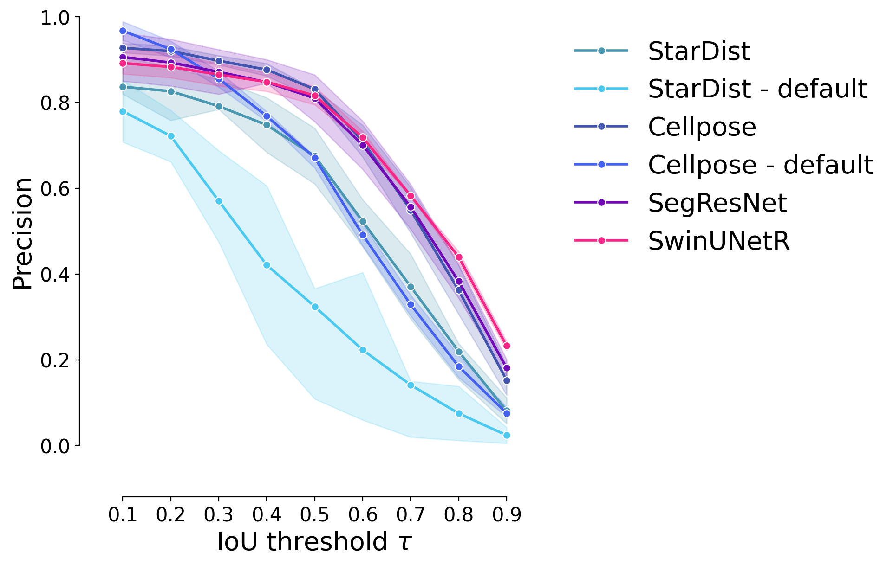
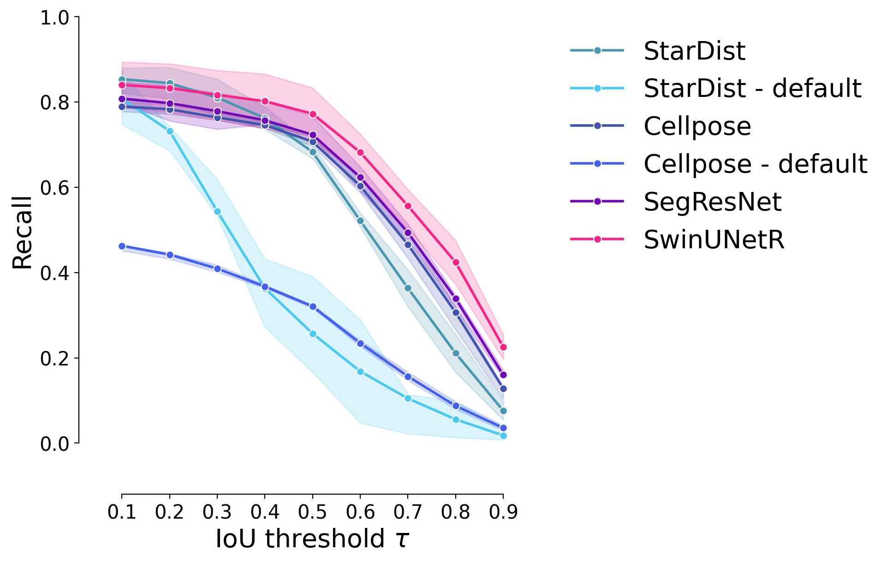
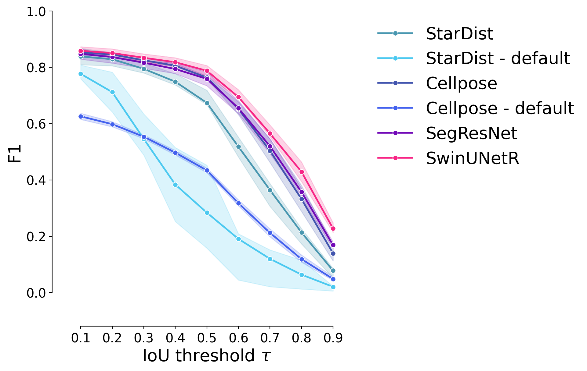
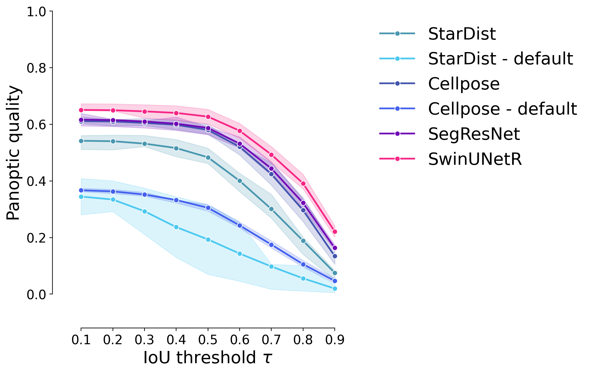
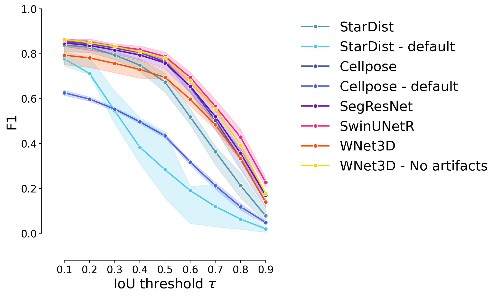

Figure 1.b - Supervised model performance#
Goals :
Show that 3D models outperform usual 2D models
import numpy as np
from tifffile import imread
import sys
import numpy as np
import pyclesperanto_prototype as cle
from stardist.matching import matching_dataset
sys.path.append("../..")
from utils import *
from plots import *
print("Used GPU: ", cle.get_device())
show_params()
#################
SAVE_PLOTS_AS_PNG = False
SAVE_PLOTS_AS_SVG = True
Used GPU: <NVIDIA GeForce RTX 4070 Ti on Platform: NVIDIA CUDA (1 refs)>
Plot parameters (set in plots.py) :
- COLORMAP : ████████
- DPI : 200
- Data path : C:\Users\Cyril\Desktop\Code\CELLSEG_BENCHMARK
- Font size : 20
- Title font size : 25.0
- Label font size : 20.0
%load_ext autoreload
%autoreload 2
Data#
data_path = DATA_PATH / "RESULTS/SUPERVISED_PERF_FIG/INFERENCE"
fold1_path = data_path / "fold1"
fold2_path = data_path / "fold2"
fold3_path = data_path / "fold3"
def get_fold_data(fold_path):
return [imread(f) for f in fold_path.glob("*.tif") if "label" not in f.name], [imread(f) for f in fold_path.glob("*.tif") if "label" in f.name]
images = []
GT_labels = []
for fold in [fold1_path, fold2_path, fold3_path]:
im, GT_lab = get_fold_data(fold)
images.append(im[0])
GT_labels.append(GT_lab[0])
fold_paths = [fold1_path, fold2_path, fold3_path]
def get_predictions(path):
return [imread(f) for f in path.glob("*.tif")]
#################
swin_paths = [f / "Swin" for f in fold_paths]
segresnet_paths = [f / "SegResNet" for f in fold_paths]
#################
cellpose_paths = [f / "cellpose/tuned" for f in fold_paths]
stardist_paths = [f / "stardist/tuned" for f in fold_paths]
#################
cellpose_default_paths = [f / "cellpose/default" for f in fold_paths]
stardist_default_paths = [f / "stardist/default" for f in fold_paths]
swin_predictions = [get_predictions(p)[0] for p in swin_paths]
segresnet_predictions = [get_predictions(p)[0] for p in segresnet_paths]
cellpose_predictions = [get_predictions(p)[0] for p in cellpose_paths]
stardist_predictions = [get_predictions(p)[0] for p in stardist_paths]
cellpose_default_predictions = [get_predictions(p)[0] for p in cellpose_default_paths]
stardist_default_predictions = [get_predictions(p)[0] for p in stardist_default_paths]
wnet_path = DATA_PATH / "RESULTS/WNET_RETRAIN/inference/WNet"
wnet_instance = [imread(str(f)) for f in wnet_path.glob("*.tif")]
wnet_instance.reverse()
Computations#
For the choice of thresholds, see notebooks in the thresholds_opti/ folder.
swin_thresholded = [np.where(swin > 0.4, swin, 0) for swin in swin_predictions]
segresnet_thresholded = [np.where(segresnet > 0.3, segresnet, 0) for segresnet in segresnet_predictions]
swin_instance = []
segresnet_instance = []
for i in range(len(fold_paths)):
swin_instance.append(np.array(
cle.voronoi_otsu_labeling(swin_thresholded[i], spot_sigma=0.65, outline_sigma=0.65))
)
segresnet_instance.append(np.array(
cle.voronoi_otsu_labeling(segresnet_thresholded[i], spot_sigma=0.65, outline_sigma=0.65))
)
# from tifffile import imwrite
# for i in range(len(fold_paths)):
# save_folder = data_path / f"fold{i+1}" / "processed"
# save_folder.mkdir(exist_ok=True, parents=False)
# imwrite(save_folder / "swin_instance.tif", swin_instance[i])
# imwrite(save_folder / "segresnet_instance.tif", segresnet_instance[i])
Plots#
taus = [0.1, 0.2, 0.3, 0.4, 0.5, 0.6, 0.7, 0.8, 0.9]
predictions = [
stardist_predictions,
stardist_default_predictions,
cellpose_predictions,
cellpose_default_predictions,
segresnet_instance,
swin_instance,
wnet_instance
]
names = [
"StarDist",
"StarDist - default",
"Cellpose",
"Cellpose - default",
"SegResNet",
"SwinUNetR",
"WNet3D"
]
model_stats = []
model_ref_name = []
fold_ref = []
for j, fold in enumerate(fold_paths):
print("Fold ", j+1)
for i, p in enumerate(predictions):
print(f"Validating on {names[i]}")
# print(p[j].shape, GT_labels[j].shape)
pred = p[j]
if len(pred.shape) > 3:
pred = pred.squeeze().astype(np.uint32)
stats = [matching_dataset(
GT_labels[j], pred, thresh=t, show_progress=False
) for t in taus]
model_stats.append(stats)
dice = dice_coeff(
np.where(GT_labels[j] > 0, 1, 0),
np.where(pred > 0, 1, 0)
)
print(f"Dice Coefficient: {dice}")
for t in taus:
model_ref_name.append(names[i])
fold_ref.append(j+1)
# uncomment for ALL plots :
# plot_performance(taus, stats, name=names[i])
print("*"*20)
Fold 1
Validating on StarDist
Dice Coefficient: 0.6993586695284486
********************
Validating on StarDist - default
Dice Coefficient: 0.39347722427914283
********************
Validating on Cellpose
Dice Coefficient: 0.7702901873444256
********************
Validating on Cellpose - default
Dice Coefficient: 0.5247862438123209
********************
Validating on SegResNet
Dice Coefficient: 0.7726461999842159
********************
Validating on SwinUNetR
Dice Coefficient: 0.8408113189509576
********************
Validating on WNet3D
Dice Coefficient: 0.5896556737502726
********************
Fold 2
Validating on StarDist
Dice Coefficient: 0.7944590859420196
********************
Validating on StarDist - default
Dice Coefficient: 0.7251454473235356
********************
Validating on Cellpose
Dice Coefficient: 0.8287320218217887
********************
Validating on Cellpose - default
Dice Coefficient: 0.5633677060172622
********************
Validating on SegResNet
Dice Coefficient: 0.8013458950201884
********************
Validating on SwinUNetR
Dice Coefficient: 0.7887976385316811
********************
Validating on WNet3D
Dice Coefficient: 0.8087545264446371
********************
Fold 3
Validating on StarDist
Dice Coefficient: 0.7584470232902522
********************
Validating on StarDist - default
Dice Coefficient: 0.5047402543506129
********************
Validating on Cellpose
Dice Coefficient: 0.7932470010023605
********************
Validating on Cellpose - default
Dice Coefficient: 0.5596045059982444
********************
Validating on SegResNet
Dice Coefficient: 0.8472361720498317
********************
Validating on SwinUNetR
Dice Coefficient: 0.8554751436182162
********************
Validating on WNet3D
Dice Coefficient: 0.8113536341409202
********************
dfs = [dataset_matching_stats_to_df(s) for s in model_stats]
df = pd.concat(dfs)
df["Model"] = model_ref_name
df["Fold"] = fold_ref
df["thresh"] = df.index
df.set_index(["Model", "Fold", "thresh"], inplace=True)
df
| criterion | fp | tp | fn | precision | recall | accuracy | f1 | n_true | n_pred | mean_true_score | mean_matched_score | panoptic_quality | by_image | |||
|---|---|---|---|---|---|---|---|---|---|---|---|---|---|---|---|---|
| Model | Fold | thresh | ||||||||||||||
| StarDist | 1 | 0.1 | iou | 1395 | 2973 | 412 | 0.680632 | 0.878287 | 0.621967 | 0.766929 | 3385 | 4368 | 0.537485 | 0.611970 | 0.469338 | False |
| 0.2 | iou | 1405 | 2963 | 422 | 0.678342 | 0.875332 | 0.618580 | 0.764349 | 3385 | 4368 | 0.537034 | 0.613520 | 0.468944 | False | ||
| 0.3 | iou | 1482 | 2886 | 499 | 0.660714 | 0.852585 | 0.592973 | 0.744486 | 3385 | 4368 | 0.531009 | 0.622822 | 0.463682 | False | ||
| 0.4 | iou | 1727 | 2641 | 744 | 0.604625 | 0.780207 | 0.516628 | 0.681285 | 3385 | 4368 | 0.506039 | 0.648597 | 0.441879 | False | ||
| 0.5 | iou | 2127 | 2241 | 1144 | 0.513049 | 0.662038 | 0.406567 | 0.578099 | 3385 | 4368 | 0.454747 | 0.686888 | 0.397089 | False | ||
| ... | ... | ... | ... | ... | ... | ... | ... | ... | ... | ... | ... | ... | ... | ... | ... | ... |
| WNet3D | 3 | 0.5 | iou | 974 | 4656 | 2253 | 0.826998 | 0.673904 | 0.590638 | 0.742643 | 6909 | 5630 | 0.518749 | 0.769767 | 0.571662 | False |
| 0.6 | iou | 1640 | 3990 | 2919 | 0.708703 | 0.577508 | 0.466721 | 0.636414 | 6909 | 5630 | 0.467688 | 0.809838 | 0.515393 | False | ||
| 0.7 | iou | 2400 | 3230 | 3679 | 0.573712 | 0.467506 | 0.346976 | 0.515193 | 6909 | 5630 | 0.396466 | 0.848045 | 0.436907 | False | ||
| 0.8 | iou | 3397 | 2233 | 4676 | 0.396625 | 0.323202 | 0.216670 | 0.356169 | 6909 | 5630 | 0.288912 | 0.893907 | 0.318382 | False | ||
| 0.9 | iou | 4704 | 926 | 5983 | 0.164476 | 0.134028 | 0.079738 | 0.147699 | 6909 | 5630 | 0.129802 | 0.968467 | 0.143042 | False |
189 rows × 14 columns
df_supervised = df.copy()
df_supervised = df.loc[["StarDist", "StarDist - default", "Cellpose", "Cellpose - default", "SegResNet", "SwinUNetR"]]
temp_cmap = COLORMAP.copy()
temp_cmap.insert(2, COLORMAP[1])
temp_cmap.insert(1, COLORMAP[0])
temp_cmap[2], _ = get_shades(temp_cmap[3])
temp_cmap[0], _ = get_shades(temp_cmap[1])
EXPANDED_COLORMAP = temp_cmap
Precision#
plot_stat_comparison_fold(df_supervised, stat="precision", colormap=EXPANDED_COLORMAP)
if SAVE_PLOTS_AS_PNG:
plt.savefig("precision_comparison_fold.png", bbox_inches = "tight")
if SAVE_PLOTS_AS_SVG:
plt.savefig("precision_comparison_fold.svg", bbox_inches = "tight")

Recall#
plot_stat_comparison_fold(df_supervised, stat="recall", colormap=EXPANDED_COLORMAP)
if SAVE_PLOTS_AS_PNG:
plt.savefig("recall_comparison_fold.png", bbox_inches = "tight")
if SAVE_PLOTS_AS_SVG:
plt.savefig("recall_comparison_fold.svg", bbox_inches = "tight")

F1 Score#
plot_stat_comparison_fold(df_supervised, stat="f1", colormap=EXPANDED_COLORMAP)
if SAVE_PLOTS_AS_PNG:
plt.savefig("f1_comparison_fold.png", bbox_inches = "tight")
if SAVE_PLOTS_AS_SVG:
plt.savefig("f1_comparison_fold.svg", bbox_inches = "tight")

Panoptic Quality#
plot_stat_comparison_fold(df_supervised, stat="panoptic_quality", colormap=EXPANDED_COLORMAP)
if SAVE_PLOTS_AS_PNG:
plt.savefig("panoptic_quality_comparison_fold.png", bbox_inches = "tight")
if SAVE_PLOTS_AS_SVG:
plt.savefig("panoptic_quality_comparison_fold.svg", bbox_inches = "tight")

WNet3D - No artifacts#
# evaluate stats for WNet3D on an extra fold, where visual is restricted to [50:, :, :]
stats = [matching_dataset(
GT_labels[0][:50,:,:], wnet_instance[0][:50,:,:], thresh=t, show_progress=False
) for t in taus]
partial_df = dataset_matching_stats_to_df(stats)
partial_df["Model"] = "WNet3D - No artifacts"
partial_df["Fold"] = 1
partial_df["thresh"] = partial_df.index
partial_df.set_index(["Model", "Fold", "thresh"], inplace=True)
df = pd.concat([df, partial_df])
df
| criterion | fp | tp | fn | precision | recall | accuracy | f1 | n_true | n_pred | mean_true_score | mean_matched_score | panoptic_quality | by_image | |||
|---|---|---|---|---|---|---|---|---|---|---|---|---|---|---|---|---|
| Model | Fold | thresh | ||||||||||||||
| StarDist | 1 | 0.1 | iou | 1395 | 2973 | 412 | 0.680632 | 0.878287 | 0.621967 | 0.766929 | 3385 | 4368 | 0.537485 | 0.611970 | 0.469338 | False |
| 0.2 | iou | 1405 | 2963 | 422 | 0.678342 | 0.875332 | 0.618580 | 0.764349 | 3385 | 4368 | 0.537034 | 0.613520 | 0.468944 | False | ||
| 0.3 | iou | 1482 | 2886 | 499 | 0.660714 | 0.852585 | 0.592973 | 0.744486 | 3385 | 4368 | 0.531009 | 0.622822 | 0.463682 | False | ||
| 0.4 | iou | 1727 | 2641 | 744 | 0.604625 | 0.780207 | 0.516628 | 0.681285 | 3385 | 4368 | 0.506039 | 0.648597 | 0.441879 | False | ||
| 0.5 | iou | 2127 | 2241 | 1144 | 0.513049 | 0.662038 | 0.406567 | 0.578099 | 3385 | 4368 | 0.454747 | 0.686888 | 0.397089 | False | ||
| ... | ... | ... | ... | ... | ... | ... | ... | ... | ... | ... | ... | ... | ... | ... | ... | ... |
| WNet3D - No artifacts | 1 | 0.5 | iou | 376 | 2190 | 854 | 0.853468 | 0.719448 | 0.640351 | 0.780749 | 3044 | 2566 | 0.560445 | 0.778992 | 0.608197 | False |
| 0.6 | iou | 660 | 1906 | 1138 | 0.742790 | 0.626150 | 0.514579 | 0.679501 | 3044 | 2566 | 0.510604 | 0.815466 | 0.554110 | False | ||
| 0.7 | iou | 1012 | 1554 | 1490 | 0.605612 | 0.510512 | 0.383136 | 0.554011 | 3044 | 2566 | 0.435460 | 0.852986 | 0.472564 | False | ||
| 0.8 | iou | 1463 | 1103 | 1941 | 0.429852 | 0.362352 | 0.244730 | 0.393226 | 3044 | 2566 | 0.324968 | 0.896830 | 0.352657 | False | ||
| 0.9 | iou | 2071 | 495 | 2549 | 0.192907 | 0.162615 | 0.096774 | 0.176471 | 3044 | 2566 | 0.156949 | 0.965155 | 0.170321 | False |
198 rows × 14 columns
plot_stat_comparison_fold(df, stat="f1", colormap=EXPANDED_COLORMAP)

Statistical tests (outdated & unused)#
Boxplot of model performance across all thresholds#
sns.boxplot(data=df, x="Model", y="f1", palette=EXPANDED_COLORMAP)
plt.xticks(rotation=45)
plt.show()
27598755.py (1):
Passing `palette` without assigning `hue` is deprecated and will be removed in v0.14.0. Assign the `x` variable to `hue` and set `legend=False` for the same effect.
27598755.py (1): The palette list has more values (10) than needed (8), which may not be intended.
from scipy.stats import f_oneway, kruskal
models_f1_means = df.groupby("Model").f1.mean()
f1_starDist = df.loc["StarDist"].f1
f1_cellpose = df.loc["Cellpose"].f1
f1_segresnet = df.loc["SegResNet"].f1
f1_swin = df.loc["SwinUNetR"].f1
f1_wnet = df.loc["WNet3D"].f1
f1_wnet_partial = df.loc["WNet3D - No artifacts"].f1
anova_test = f_oneway(
# f1_starDist,
f1_cellpose,
f1_segresnet,
f1_swin,
f1_wnet,
f1_wnet_partial
)
print("Kruskal test: ", anova_test)
ANOVA test: F_onewayResult(statistic=0.4660165757160163, pvalue=0.7605465068261601)
# Significant difference between the models?
kruskal_test = kruskal(
f1_starDist,
f1_cellpose,
f1_segresnet,
f1_swin,
f1_wnet,
f1_wnet_partial
)
print("Comparisons of F1 scores between all models:")
print("- StarDist\n- Cellpose\n- SegResNet\n- SwinUNetR\n- WNet3D\n- WNet3D - No artifacts")
print("Kruskal-Wallis test: ", kruskal_test)
Comparisons of F1 scores between all models:
- StarDist
- Cellpose
- SegResNet
- SwinUNetR
- WNet3D
- WNet3D - No artifacts
Kruskal-Wallis test: KruskalResult(statistic=5.021370796083488, pvalue=0.41327764021418123)
# Best models - significant difference between them?
kruskal_test = kruskal(
# f1_starDist,
f1_cellpose,
f1_segresnet,
f1_swin,
f1_wnet,
f1_wnet_partial
)
print("Comparisons of F1 scores between the best models:")
print("- Cellpose\n- SegResNet\n- SwinUNetR\n- WNet3D\n- WNet3D - No artifacts")
print("Kruskal-Wallis test: ", kruskal_test)
Comparisons of F1 scores between the best models:
- Cellpose
- SegResNet
- SwinUNetR
- WNet3D
- WNet3D - No artifacts
Kruskal-Wallis test: KruskalResult(statistic=3.710657202182631, pvalue=0.4465777918818482)
# Best supervised models - significant difference between them?
kruskal_test = kruskal(
f1_cellpose,
f1_segresnet,
f1_swin
)
print("Comparisons of F1 scores between the best supervised models:")
print("- Cellpose\n- SegResNet\n- SwinUNetR")
print("Kruskal-Wallis test: ", kruskal_test)
Comparisons of F1 scores between the best supervised models:
- Cellpose
- SegResNet
- SwinUNetR
Kruskal-Wallis test: KruskalResult(statistic=0.6194921208470987, pvalue=0.7336332310839804)